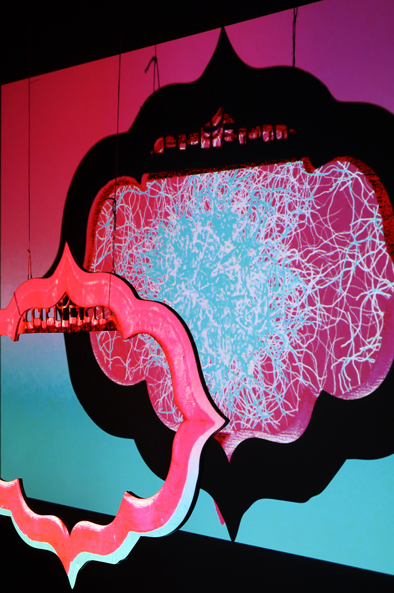
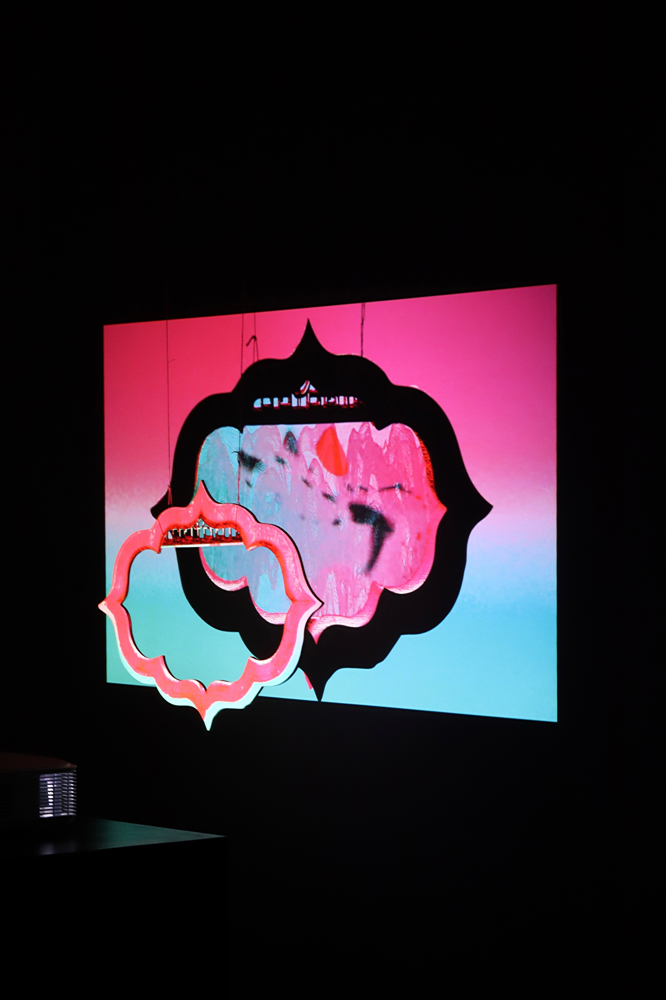
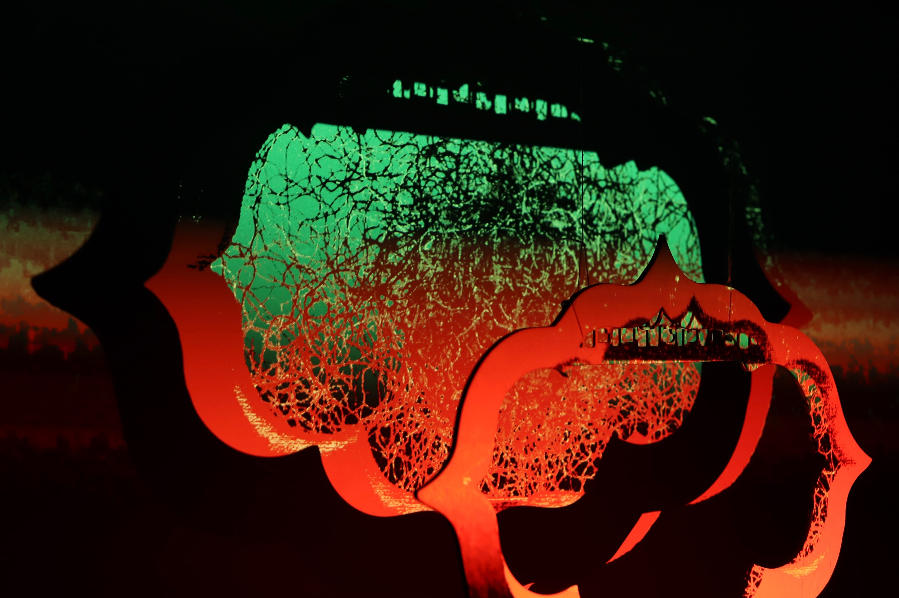
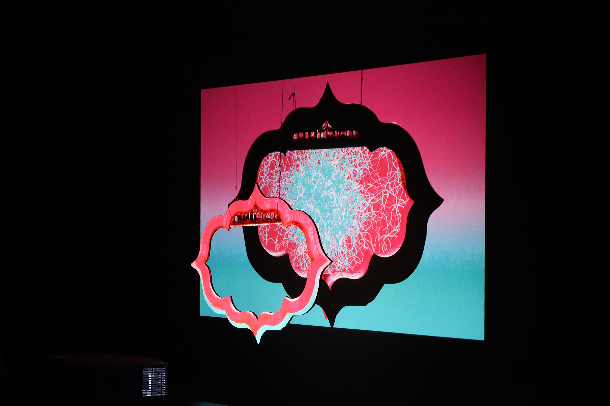
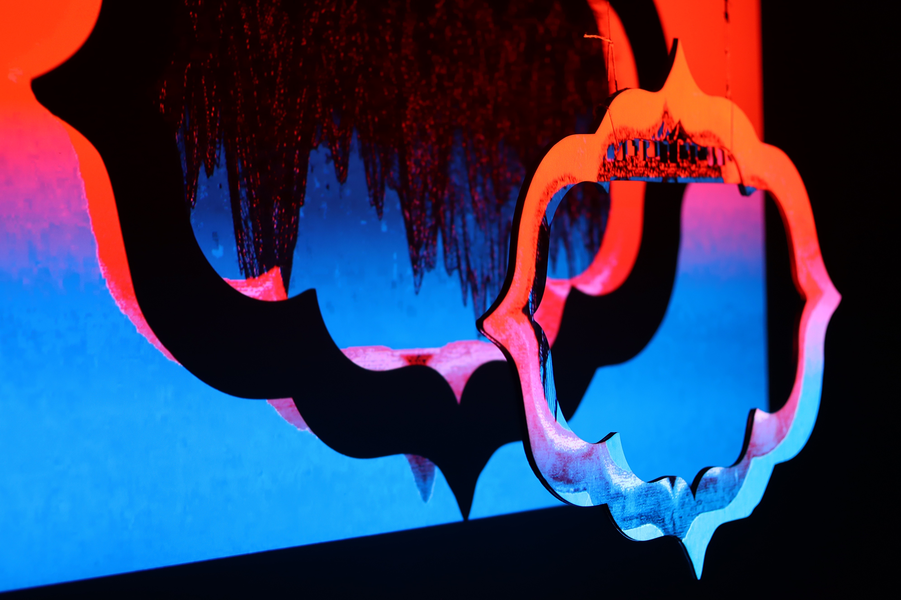
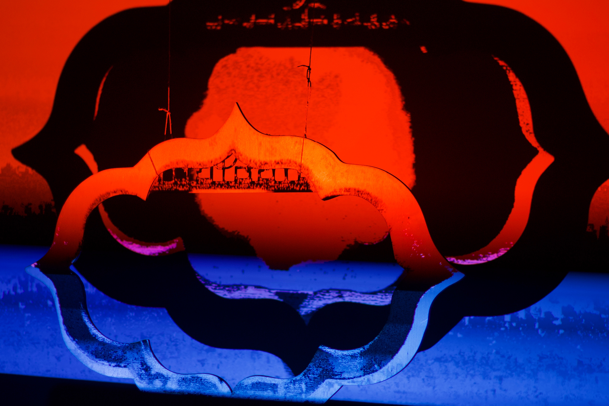
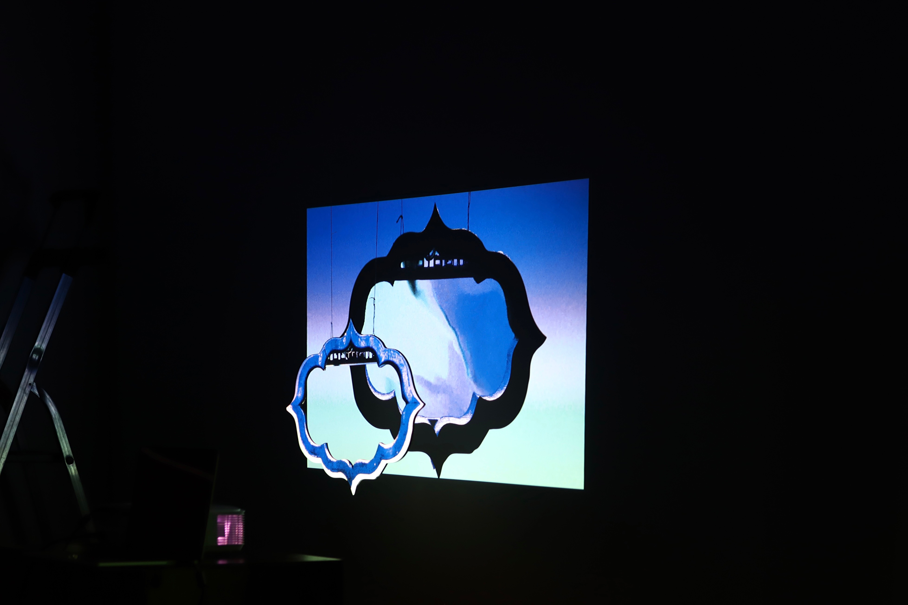
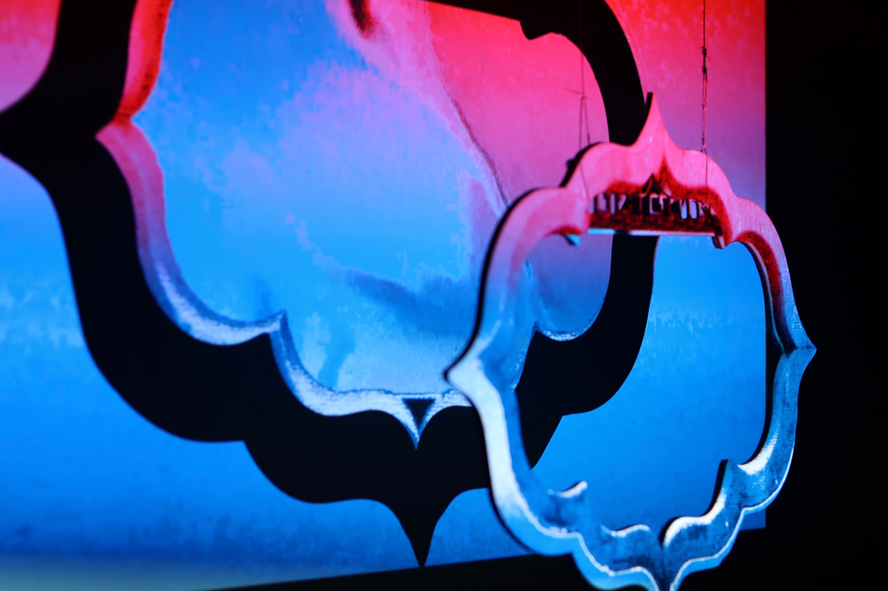

Vimeo Video
“Peeping” is one of Landscaping Techniques of Classical Chinese Gardens. The view through the window frame allows people to appreciate the depth of space and the flow of imagery.
The work is based on two of the most iconic acts in the Kunqu opera The Peony Pavilion, and presents the dream of the heroine, Du Liniang, from the perspective of a 'peep' through a window.
The clashing colors of pink create a charming sense of spring, while the privacy of the 'window' is a metaphor for the hidden emotions of the protagonist, revealing a subtle and gentle oriental aesthetic.
Images
       则为你如花美眷，似水流年。